Retour exposition : Boc'N'Geek 2025
En 2025, les fêtes de fin d'année s'invitent plus tôt que prévu.
Dès le mois de septembre, nous avons pris la route à travers la France avec le Brick Winter Burrow pour aller à la rencontre des passionnés de briques, petits et grands.
Notre destination ? Bressuire, une petite commune située dans le département des Deux-Sèvres.
Le rendez-vous est donné à la Bocapole pour deux journées d'animation, à l'occasion du Boc'N'Geek 2025, le troisième événement public auquel nous avons eu le plaisir de participer.

Troisième épisode
En ce début 2025, tous comme les autres membres de la Brick Team Aquitaine, nous nous étions dit que nous devrions participer à une autre exposition en fin d'année.
Nous étions enthousiastes à remettre le couvert une troisième fois après nos deux premières expériences positives (cf. articles "Retour exposition : Des Briques pour le Téléthon 2023" et "Retour exposition : Cahors Bricks Expo 2024"). Mais nous ne savions ni quand, ni où.


Les mois ont filé à toute vitesse et nos agendas se sont vite remplis. En août, nous avons dû admettre avec regret qu'il nous serait impossible de participer à un événement public en novembre ou en décembre.
Les possibilités étaient limitées et, pour avoir l'opportunité de présenter le Brick Winter Burrow en 2025, une seule option s'imposait : le "Boc'N'Geek 2025"1. Ce dernier allait se dérouler le 20 et 21 septembre1.
Festival ou exposition ?
Après avoir candidaté pour participer à cette exposition, nous avons cherché à en apprendre plus sur cette dernière car nous ne la connaissions pas. Il ne nous semblait pas non plus l'avoir vu mentionnée auparavant au sein de la Brick Team Aquitaine.
Après quelques recherches, nous avons rapidement constaté que le "Boc'N'Geek 2025"1 serait un évènement différent de nos premières expositions.
Le Japon à Niort
Retour en arrière. Le Boc'N'Geek a été créé par l'association Hors Cadre (Instagram, Facebook, YouTube) en 20102. À l'époque, cet évènement se déroulait à Niort, une autre commune située dans le département des Deux-Sèvres. Son nom était également différent et s'intitulait "Japaniort".
Référencé de 2013 à 2022 comme "Le festival des arts japonais et des cultures imaginaires"2,3, il était devenu clair à nos yeux que ce weekend ne serait pas réservé uniquement aux passionnés de la brique, mais deux jours dédiés à la pop culture.
{kind=link}
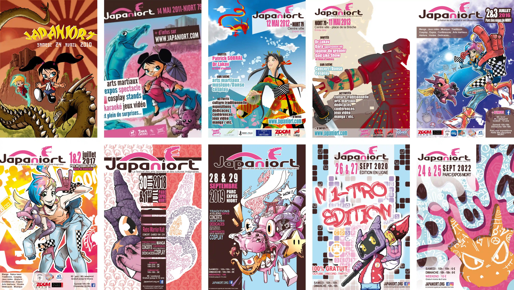
Pluralité remarquable
En 2024, suite à son déménagement à Bressuire, "Japaniort" est devenu le "Boc'N'Geek"4.
Le concept est resté le même, avec une importante diversité en termes d'animations pour le public. On pouvait effectivement y trouver plusieurs formes d'arts, des stands en tous genres, une bonne partie étant toujours dédiée à la culture japonaise et aux cosplays5,6, sans oublier quelques spectacles qui se déroulaient au cours du weekend7.
{kind=link}
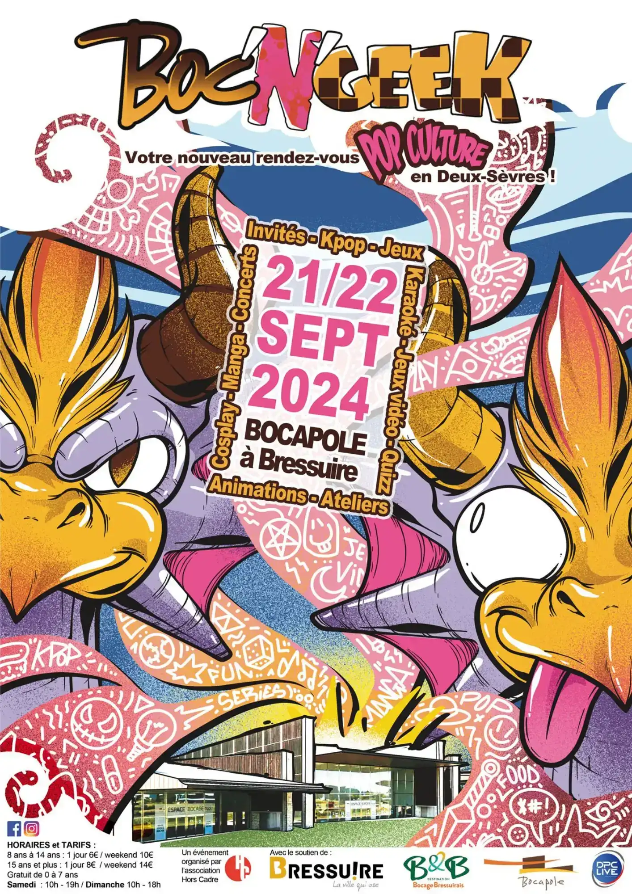
En 2025, cette pluralité était toujours présente. On peut le constater dans les programmations montrées ci-dessous.
Cette variété était parfois même surprenante, pour ne pas dire inattendue. Nous avons par exemple vu un stand animé par l'association Gâtine Et Bocage Utilisateurs des Logiciels Libres (GEBULL), et entièrement dédié aux logiciels libres8.
{kind=link}
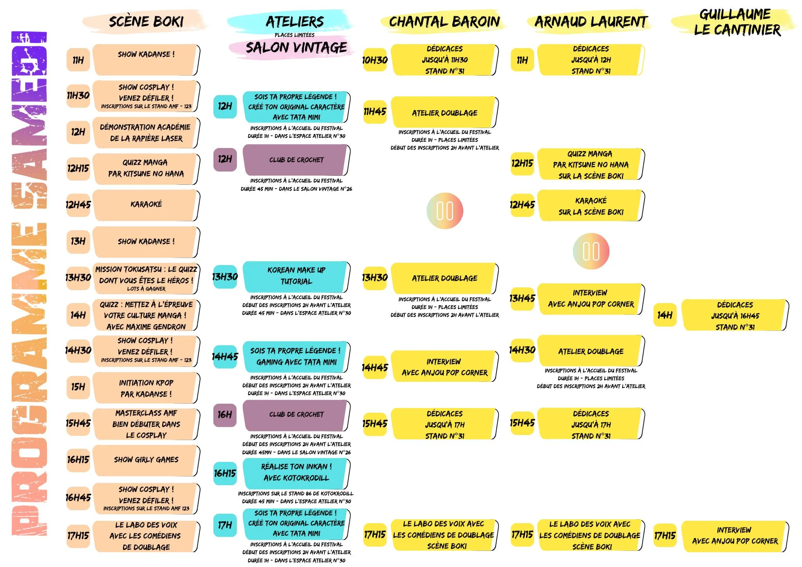
{kind=link}
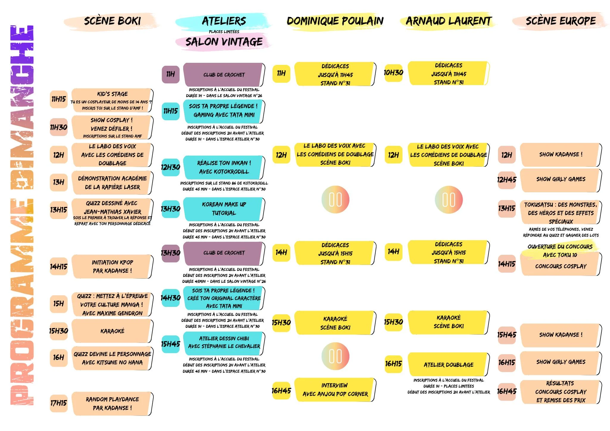
Les LEGO, quant à eux, n'occupaient qu'une petite partie du festival, comme illustré dans le plan ci-dessous avec le stand numéro 15.
{kind=link}
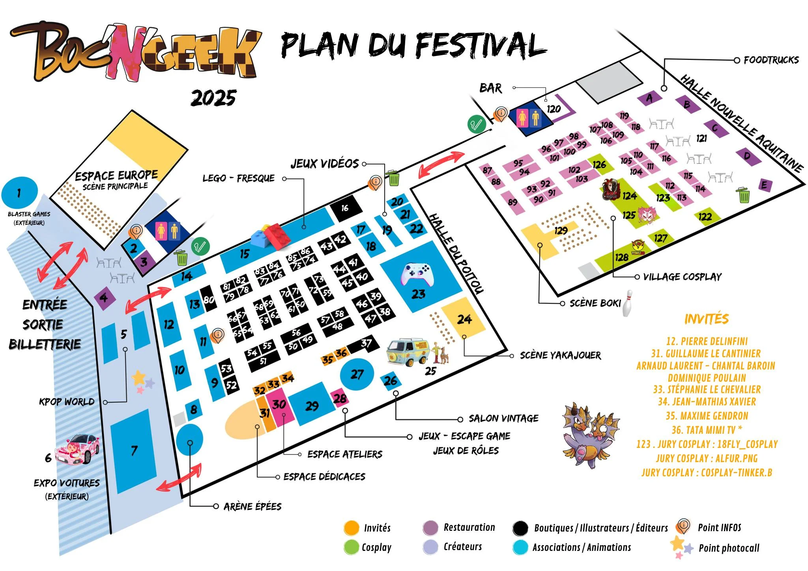
Meilleure logistique
Malgré cette nouvelle forme d'expositions où les LEGO n'étaient pas les uniques stars du weekend, nous avons considéré cet évènement de la manière la plus sérieuse qu'il soit. Lors de la "Cahors Bricks Expo 2024"9, nous avions rencontré plusieurs difficultés d'ordre logistique (cf. article "Retour exposition : Cahors Bricks Expo 2024").
Nous souhaitions ne pas les reproduire.
Moins de distance
La première faute que nous avions commise en 2024 avait été de sous-estimer l'organisation nécessaire pour louer un utilitaire. Cette solution s'imposait en raison de la distance à parcourir pour rejoindre Cahors. Le chargement du camion, effectué le jour même du départ, nous avait d'ailleurs fait perdre un temps précieux.
À Bressuire, en revanche, la situation était bien plus simple : avec seulement une heure et demie de trajet, il nous suffisait de remplir nos propres véhicules et de prendre la route. Nous l'avions déjà fait en 2023 pour Champniers (cf. article "Retour exposition : Des Briques pour le Téléthon 2023").
{kind=link}
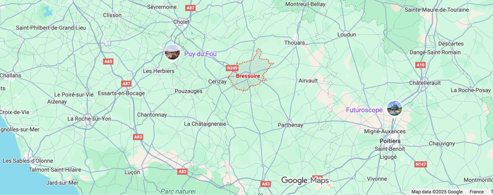
Feuille de route
Avant notre départ, nous avions également préparé une liste des choses à emporter afin de ne rien oublier. Au cours des deux évènements passés, nous avions pu trouver une solution de dernière minute grâce aux soutiens de notre famille ou des membres de la Brick Team Aquitaine.
Mais pour le "Boc'N'Geek 2025"1, nous tenions à n'omettre aucun détail ou aucun accessoire, notamment nos affiches qui mettaient en avant notre site et notre compte Instagram.


Enfin, nous avions pris le temps de disposer les piles dans les boîtiers avant notre départ. Nos bâtiments étaient ainsi prêts à être illuminés dès leur mise en place sur notre diorama.
Nous étions ravis du résultat final : 3 heures de montage avec 2 paires de bras pour le "Boc'N'Geek 2025"1 contre 4 heures et demie avec 6 mains à la "Cahors Bricks Expo 2024"9 !
Améliorations de taille
Au-delà de l'organisation, nous avons souhaité arriver au "Boc'N'Geek 2025"1 avec quelques nouveautés. Contrairement à l'année passée où la plupart des changements restaient invisibles pour le public, nous voulions mettre en avant des évolutions plus tangibles en 2025.
Un peu de chocolat ?
Une importante modification du Brick Winter Burrow s'est faite cette année avec l'introduction d'un nouveau bâtiment. Depuis 2022, nous construisons effectivement très peu de choses visuelles (cf. chapitre "Distance avec les briques" de la partie "Histoire du Terrier").
Néanmoins, en ce mois de septembre, nous devions faire une exception et déroger à nos habitudes.
{kind=link}
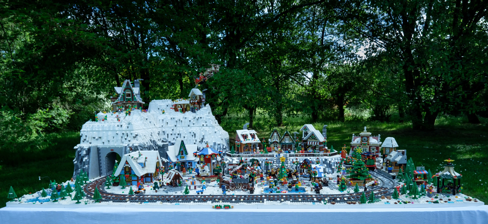
Retour dans le passé, en novembre 2023. Le MOC "The Art of Chocolate"10 est accepté comme faisant partie des modèles du BrickLink Designer Program Series 311,12. Cette œuvre a été conçue par Marcos Garavelli, aussi connu sous le pseudonyme "Brickester".
À l'époque, nous trouvions cette création des plus sublimes et pensions qu'elle s'intégrerait parfaitement à notre Terrier. Nous étions d'autant plus convaincus par la présence de neige sur cette chocolaterie.
{kind=link}
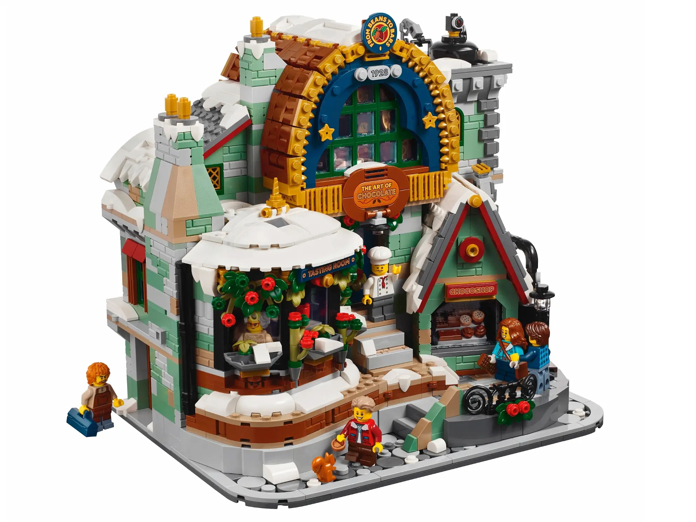
{kind=link}
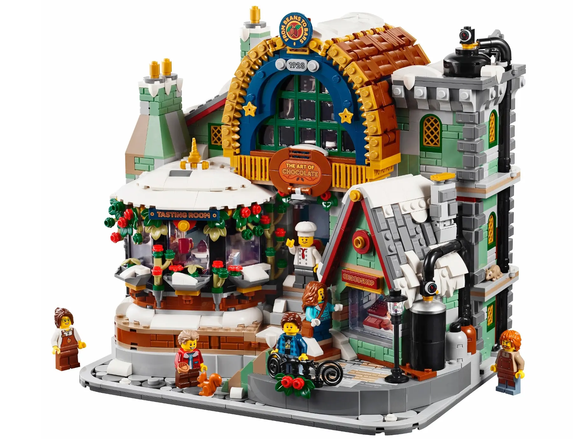
Dans l'espoir de voir ce MOC être produit par la marque danoise, nous avions marqué la date dans notre calendrier : le 8 octobre 2024 à 17h00, heure locale en France. Nous devions prendre part aux précommandes ; si plus de 3 000 unités étaient vendues, LEGO se lancerait alors dans la production de cette merveille10.
Il fallait ensuite attendre le premier trimestre de l'année 2025 pour voir ce set arriver chez nous.
{kind=link}
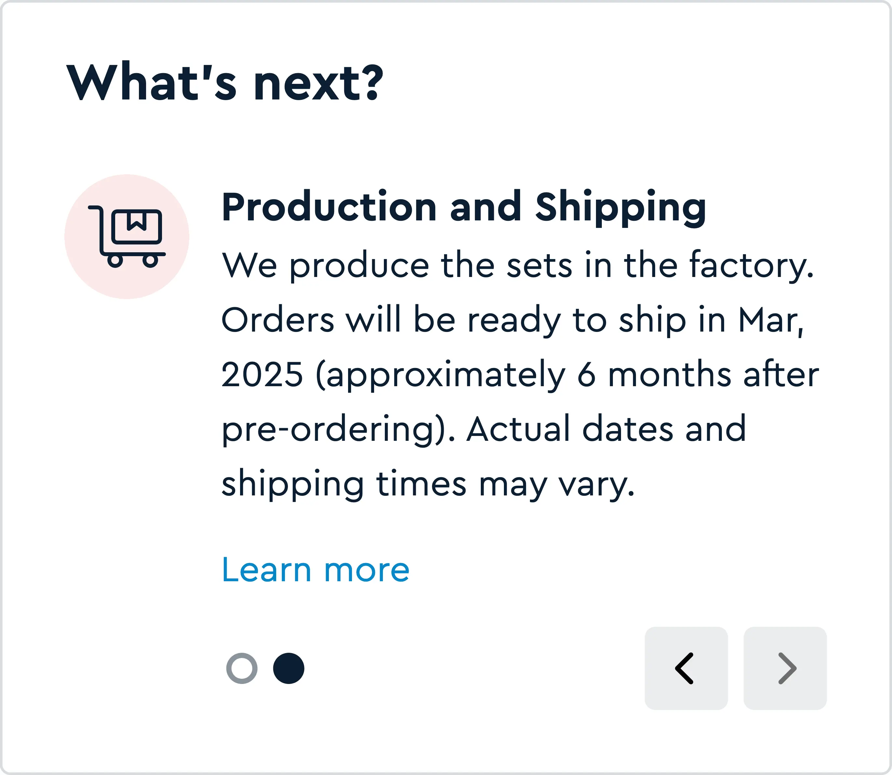
Et la surprise fut à la hauteur de nos attentes : vers la mi-mars, le désormais officiel "The Art of Chocolate" (Set 910039) était entre nos mains. Sans tarder, nous nous sommes attelés à la tâche de le construire, de l'illuminer, pour enfin le placer dans notre Brick Winter Burrow.
Manquant de place, nous avons dû nous séparer du MOC "Little Winter Town Hall"13 de l'AFOL Little_Thomas, disponible sur Rebrickable. Nous avions ajouté ce dernier quelques années plus tôt (cf. chapitre "Version 2021" de la partie "Histoire du Terrier").


Même si nous aimions notre mairie qui, rappelons-le, était un modèle réutilisant une majorité des pièces de la "Winter Village Fire Station" (Set 10263), nous n'avons pas regretté notre choix de voir "The Art of Chocolate" (Set 910039) érigé à côté de la "Winter Village Station" (Set 10259).
{kind=link}
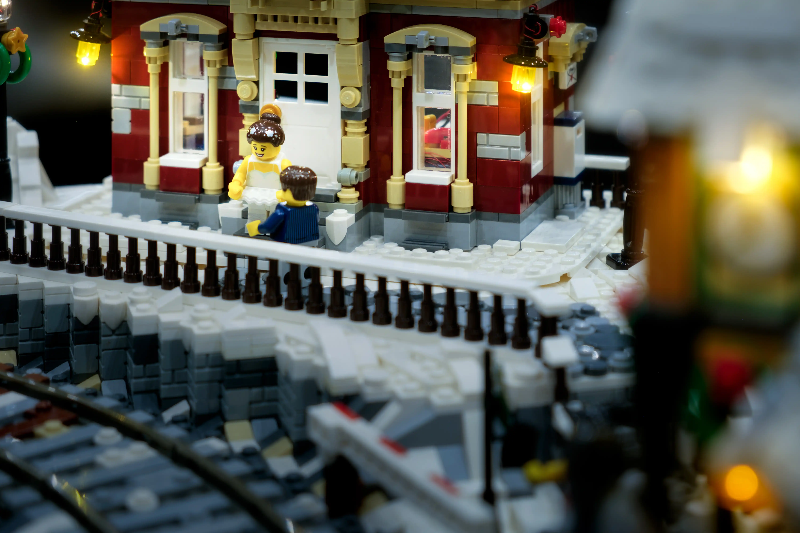

Refonte électrique
La deuxième nouveauté, bien que moins intéressante pour une grande partie du public, fut notre circuit électrique. Nous l'avons entièrement repensé et l'avons rendu beaucoup plus modulable. Il s'agissait effectivement d'un projet que nous souhaitions réaliser depuis des années (cf. articles "Bilan 2023" et "Bilan 2024").
Il y aurait beaucoup à dire car ces travaux nous ont pris plusieurs dizaines de mois de lecture, de réflexion, d'implémentations, d'échecs, pour finalement arriver à quelque chose dont nous sommes vraiment fiers aujourd'hui. Le "Boc'N'Geek 2025"1 était d'ailleurs pour nous un excellent moyen de valider notre nouvelle preuve de concept.
Pour rappel, l'électrification des modules du système Modular Integrated Landscaping System (MILS) a été un casse-tête depuis bien des années, et un sujet étudié par la communauté au fil du temps14,15,16.
De notre côté, nous avons tenté différentes choses, comme l'emploi de connecteurs WAGO en 2024 (cf. article "Retour exposition : Cahors Bricks Expo 2024"), mais nous n'avons jamais été pleinement satisfaits ; trop d'incertitudes, de branchements à effectuer à la dernière minute, des soudures à réaliser en catastrophe, etc.

La nouveauté majeure de cette année a été de réduire l'utilisation de ces connecteurs WAGO pour les remplacer par des broches pogo ("pogo pins" ou "spring-loaded pins" en anglais).
Formulé simplement, il s'agit de petites prises à ressort qui permettent de connecter facilement un appareil sans avoir besoin de souder17,18. Une sacrée invention pour les exposants que nous sommes qui avons besoin de modularité !
{kind=link}
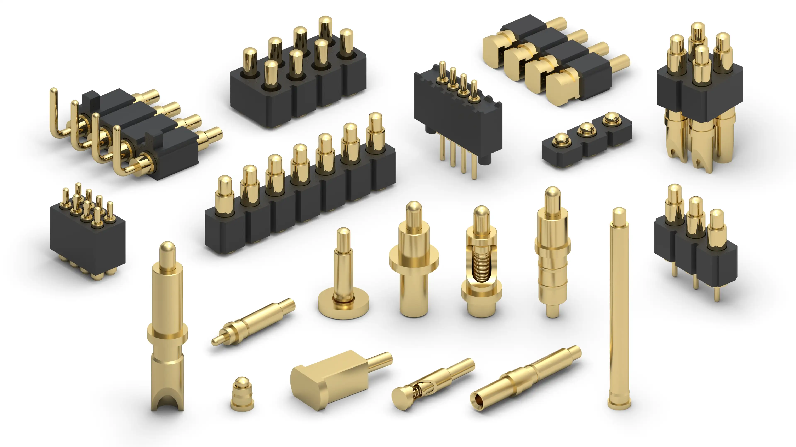
Ces nouveaux composants nous ont forcé à recâbler l'entièreté de nos lampadaires ainsi que les stands de notre marché. Mais tout ce travail, qui s'est d'ailleurs effectué, en urgence, à quelques jours de l'évènement, en valait la chandelle.
Depuis cette restructuration, les câbles restent désormais dans nos modules MILS, et nous n'avons qu'à emboîter les bâtiments qui seront illuminés. Plus de branchements, plus de problèmes de soudures à effectuer à la dernière minute. Nous pouvons presque parler de connecteurs sans-fils, car aucun câble ne dépasse !
{kind=link}
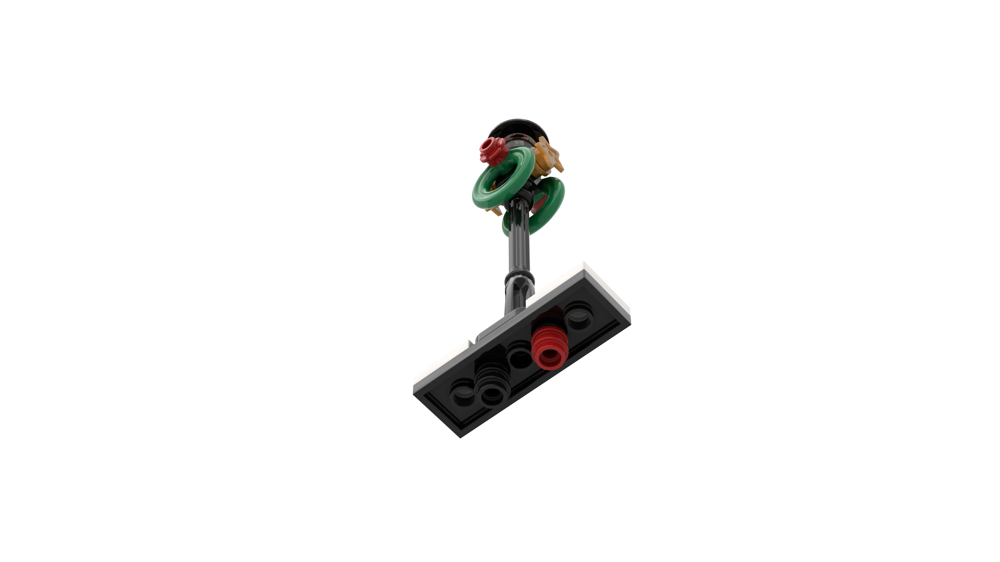
Modules MILS remaniés
Ce changement global de notre circuit électrique nous a aussi obligé à repenser l'entièreté de nos modules MILS. Plusieurs modifications majeures sur ces derniers on été apportées.
- Pour commencer, nous avons revu leurs dimensions. Jusque-là, ces derniers étaient effectivement des carrés de 32 tenons. Depuis cette année, nous avons choisi de doubler leurs tailles et de réaliser des carrés de 64 tenons de côté.

- En passant de 28 modules à 8, le nombre de branchements a drastiquement diminué, nous permettant d'avoir un temps de montage bien plus court.

{kind=link}
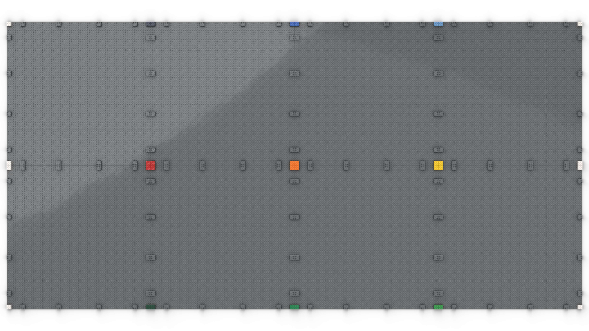
- Cet agrandissement nous a également fait gagner 32 tenons de large. Afin de garder un certain esthétisme, nous avons dû décaler notre circuit de train de 16 tenons sur la droite.
- Le système de support et tous les marquages au sol ont eux aussi été remaniés.
- Les plaques servant d'habillage ont été modifiées. En passant de "Plate 8 x 8" (Réf.
41539) à des "Plate 16 x 16" (Réf.91405), autant que faire se peut, l'accès aux câbles est devenu d'autant plus facile.
{kind=link}
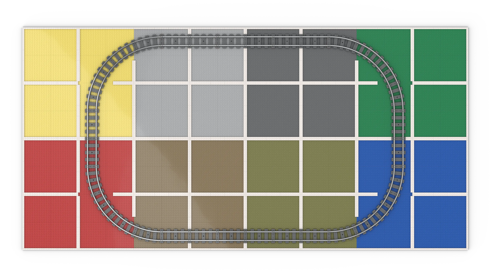
- Toujours du côté des dimensions, les modules ont été surélevés d'une brique de haut afin d'avoir une meilleure gestions des câbles. Ces derniers sont désormais bloqués à l'aide de "Arch 1 x 4" (Réf.
3659) et de "Technic, Brick 1 x 4 with Holes" (Réf.3701). Cette configuration nous évite d'avoir des nœuds. - Les emboîtements entre modules ont été repensés. Nous avons par exemple ajouté des indications visuelles grâce à des "Technic, Pin ½ with Friction Ridges" (Réf.
89678) afin de savoir où les connections doivent s'effectuer. - Les jonctions ne se font plus avec des "Technic, Pin with Short Friction Ridges" (Réf.
2780). Cette méthode a toujours été pour nous assez lente et fastidieuse. Désormais, nous utilisons des "Technic, Axle 6L" (Réf.3706), un moyen de connection beaucoup plus rapide et efficace.
{kind=link}
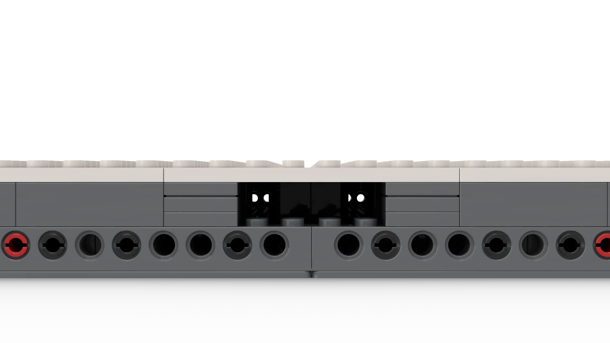
Nouveaux cartons
Parmi les ajouts presque invisibles pour les visiteurs mais incroyablement utiles pour nous, nous devions mentionner notre système de transport. Nous l'avons effectivement amélioré.
À la fin de la "Cahors Bricks Expo 2024"9, au moment de remballer notre diorama, nous avions constaté que certaines parties de notre village commençaient à s'effriter sérieusement. Pour n'en citer que deux :
- Notre montagne, avec les bases des différents étages où certaines pièces disparaissaient et se retrouvaient dans nos cartons, comme des "Slope 45 2 x 1" (Réf.
3040) ou des "Slope 75 2 x 1 x 3 - Hollow Stud" (Réf.4460b) - Notre marché, avec ses stands qui n'étaient fixés que par quelques tenons et tenus à nos modules MILS avec des câbles électriques

{kind=link}
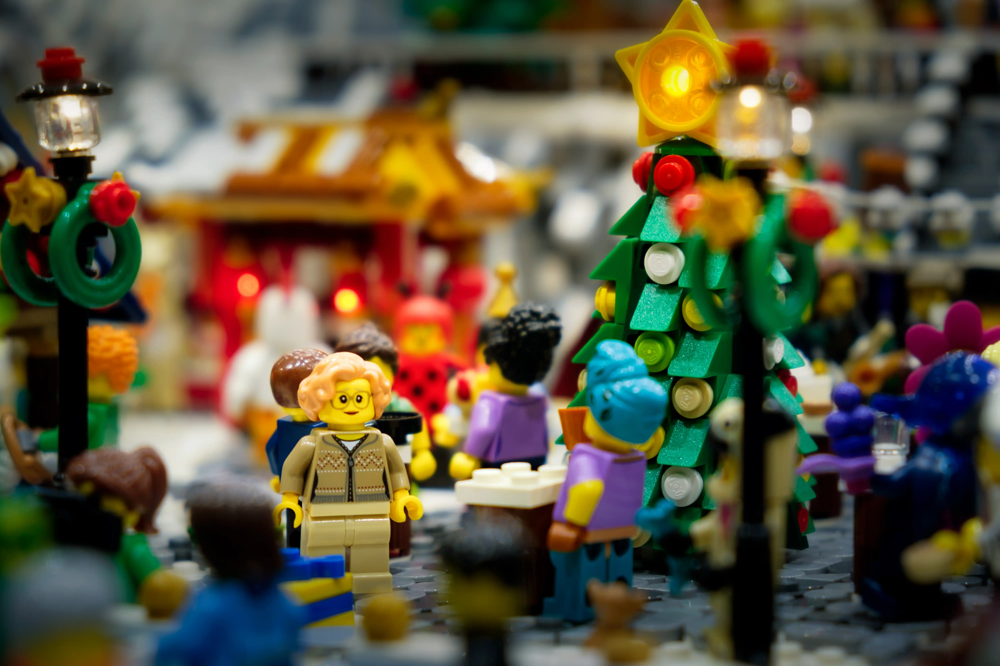
C'est la raison pour laquelle quand nous sommes passés des modules MILS de 32 x 32 à 64 x 64, nous pensions qu'il y aurait moins de casse. Ce qui fut le cas. Mais nous devions aussi trouver un nouveau moyen de transport.
À cause de contraintes budgétaires et surtout par manque de temps, nous ne sommes pas allés chercher des boîtes en plastique rigides, comme celles proposées par le fabricant AUER Packaging.
Nous avons au contraire investi dans des cartons de grande taille. Nous nous sommes arrêtés chez l'entreprise Carton Market qui proposaient des options très intéressantes.
{kind=link}
{kind=link}
Parmi les références proposées, nous avons choisi le "Carton croix pour tableaux 66,5 x 56 x 8 cm" (Réf. SKU 121498)19. Nous en avons commandé un par nouveau module MILS, soit un total de 8.
Ce carton grand format mériterait quelques ajouts, comme des renforts latéraux, afin de le rendre plus résistant sur le long terme. Mais malgré ses imperfections, nous avons été agréablement surpris de voir qu'ils avaient très bien supporté le voyage.
{kind=link}
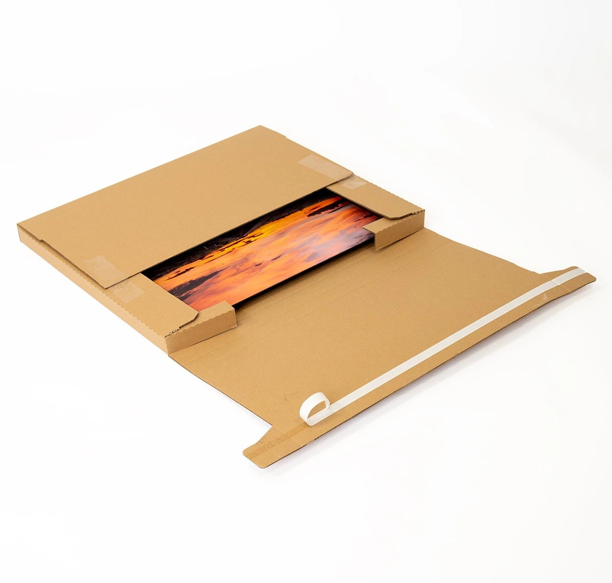
{kind=link}
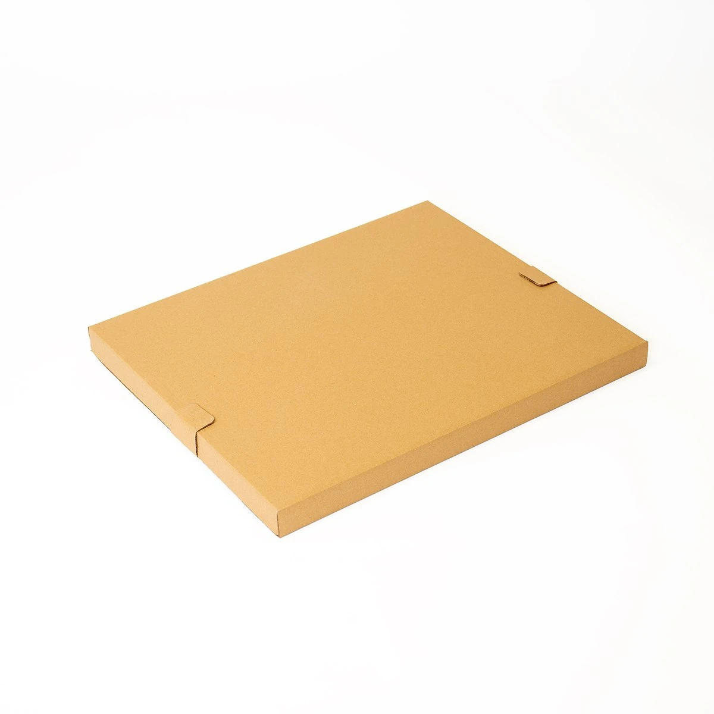
Les béquilles imprévues
Hélas, les accidents ne concernent pas uniquement certaines minifigs, comme le malchanceux "Clumsy Guy" (Minifig col231) de la "Series 15 Minifigures". Tout le monde peut se retrouver un jour à marcher sur une brique LEGO - un classique douloureux - ou, bien pire encore, à subir un véritable accident.
Et c'est précisément ce qui est arrivé. Alors que tout avait été minutieusement préparé pour une exposition sans accroc, l'imprévu a frappé : une fracture de la cheville. Quelques jours seulement avant le lancement du "Boc'N'Geek 2025"1, un membre de l'équipe du Brick Winter Burrow (cf. chapitre "Qui sommes-nous ?" de la partie "À Propos") s'est retrouvé cloué sur place, incapable de se déplacer après une chute malencontreuse.
{kind=link}
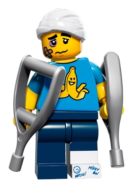
Le choc fut rude. La nouvelle a d'abord semé le doute : après tant d'énergie et de passion investies, devions-nous tout annuler ? Devions-nous laisser tomber ce rendez-vous que nous attendions depuis des mois ? La tentation de baisser les bras était bien là, mais l'envie de partager notre univers et de rencontrer le public était plus forte que tout.
Alors nous avons décidé de tenir bon. L'équipe s'est réorganisée, chacun a pris une part supplémentaire, et l'un de nous a suivi l'aventure à distance, entre frustration et fierté. Car même loin physiquement, il faisait pleinement partie de cette exposition. Et c'est ensemble, malgré les obstacles, que nous avons fait vivre le Brick Winter Burrow au "Boc'N'Geek 2025"1.
Et nous n'avons pas été déçus. Cette expérience fut merveilleuse, couronnée de succès. De nouvelles rencontres, de nouveaux défis pour 2026. L'aventure continue !
Remerciements
Cet événement a été exceptionnel et n'aurait pas pu avoir lieu sans l'implication de nombreuses personnes. Pour conclure cet article, nous tenons à leur adresser nos plus sincères remerciements.
- Tout d'abord, nous remercions l'association Hors Cadre, à l'origine de ce festival qu'elle fait vivre depuis 2010. Elle nous a également aidés à enrichir cet article en partageant les affiches de l'édition 2025.
- La Mairie de Bressuire, qui a mis à disposition le Bocapole pour accueillir l'événement.
- Le média Anjou Pop Corner (YouTube, Twitch, Instagram, Facebook), pour ses lives Twitch qui ont permis au membre du Brick Winter Burrow immobilisé de suivre le "Boc'N'Geek 2025"1 à distance.
- La Brick Team Aquitaine, dont le soutien constant au fil des années nous permet d'exposer le Brick Winter Burrow.
- Nos voisins et homologues AFOLs, ainsi que les hôtes des Chambres des Sorciers, sans oublier la jeune mais prometteuse association Briques 2 Sèvres, avec qui nous partagions le stand LEGO.
- Un remerciement tout particulier à Guillaume Guérineau (Instagram, Facebook) pour avoir rendu possible notre participation en 2025 et pour l'organisation du stand LEGO au festival.
- Enfin, un merci chaleureux à nos familles et à nos proches, toujours présents pour nous accompagner dans ces événements publics et cette aventure qu'est le Brick Winter Burrow.
Sources
LEGO Ambassador Network: Boc'N'Geek 2025 (Archive) ↩↩↩↩↩↩↩↩↩↩
La Nouvelle République: Bressuire : avec Boc'N'Geek, l'association Hors cadre veut promouvoir la pop culture (Archive) ↩
La Nouvelle République: Le cosplay sur le devant de la scène de Boc'N'Geek à Bressuire (Archive) ↩
Ouest-France: Bressuire. Les 5 raisons d'aller au le festival Boc'N'Geek (Archive) ↩
LEGO Ambassador Network: Cahors Bricks Expo 2024 (Archive) ↩↩↩
Instagram: "The Art of Chocolate", finalist in BrickLink Designer Program Series 3 (Archive) ↩
Rebrickable: Little_Thomas's Little Winter Town Hall (Archive) ↩
José Proença's Flickr: Power Distribution System for MILS (like) modules ↩
Maciej Drwięga's Flickr: Diorama Module Connector for Power Distribution ↩
Mill-Max: Introduction to Spring Loaded Pogo Pins & Connectors (Archive) ↩
Mill-Max: Frequently Asked Questions about Spring-Loaded Pogo Pins & Connectors (Archive) ↩
Carton Market: "Carton croix pour tableaux 66,5 x 56 x 8 cm" (Ref. SKU
121498) (Archive) ↩